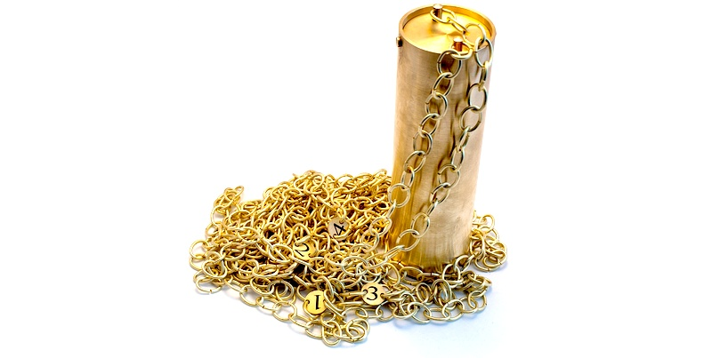

Пробоотборник ПЭ-1600
Пробоотборник ПЭ-1600 для отбора проб нефтепродуктов по ГОСТ 2517. Изготовлен из латуни (в том числе латунная цепь - ЛС59-1), что исключает возможность возникновения искры при контакте с металлическими поверхностями и позволяет производить пробоотбор агрессивных жидкостей (растворители, лаки и аналогичные).

Технические характеристики
- Материал Сталь 10Х17Н13М2Т
- Объем отбираемой пробы: 0,6 л.
- Габаритные размеры: 224х86х76 мм.
- Масса не более: 1,5 кг.
- Объем отбираемой пробы: 0,7 л.
- Габариты:
- высота 250 мм.
- диаметр 72 мм.
- масса 2 кг.
Пробоотборники и цепи изготовлены из латуни ЛС59-1.
Пробоотборник представляет собой цилиндрический сосуд с поворотной крышкой, к которой прикрепляется настоящая латунная цепь.
Комплектация
- Пробоотборник: 1 шт
- Паспорт: 1 шт
- Упаковка: 1 шт